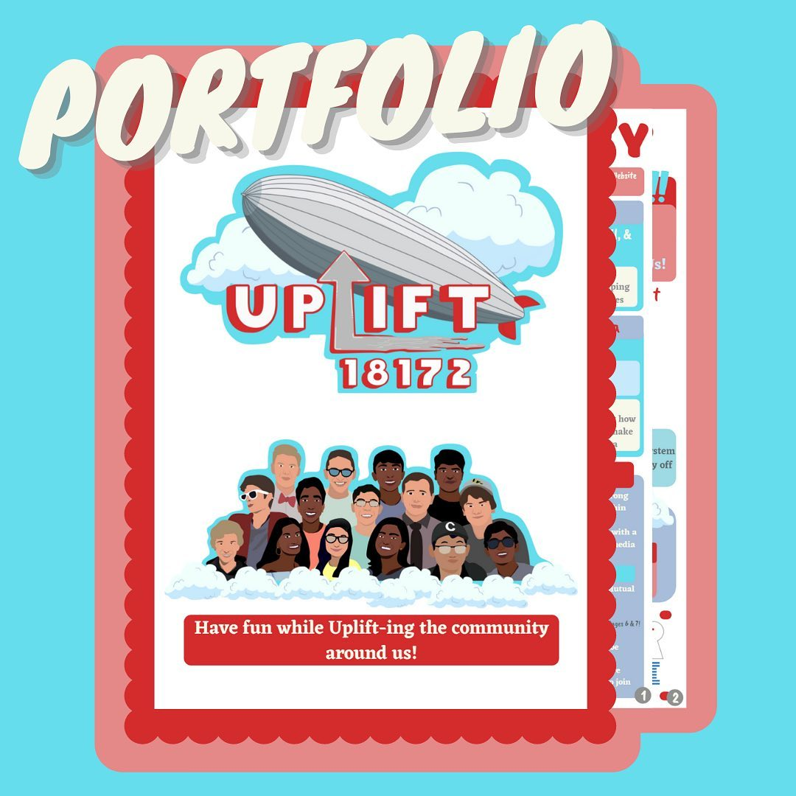
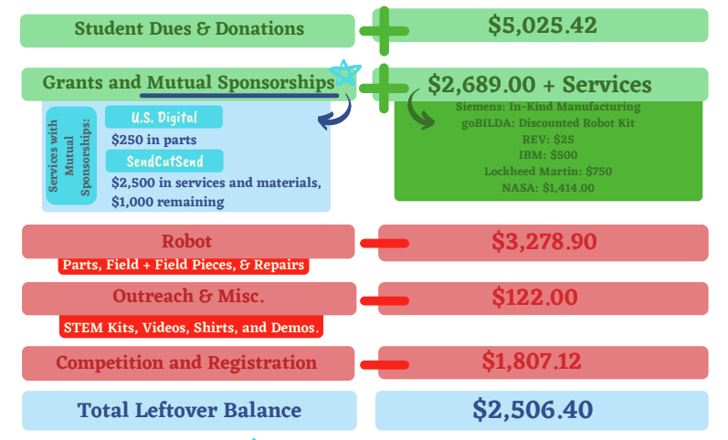

Summer 2021 State & Season Recap

The state competition was unusual this season. Just like the rest of this year, the entire event was held virtually with all judging held over Zoom and all robot matches recorded online. It was, however, just as competitive as it’s ever been with several younger teams (including us) working hard to get to the top. With a large focus on judging and portfolio in addition to AP exams, the robot itself changed very little. Lucky for us, that focus on judging paid off earning us the top overall award at the State Competition and recognition from all of the Florida FIRST community.
2 Inspire Award Wins in a Rookie Season - Virtually Unheard Of
If you’ve been watching our work this season, you know that we set out to make an impact and shake things up in the Florida competition field. After winning 1st place Inspire, the top overall award at the Space Coast League Championship, and now another one at States, we believe we have accomplished that goal. We are extremely grateful to be the first rookie team to win either of those awards in the better part of 10 years and can’t thank our supporters enough. Without our sponsors, mentors, families, and friends, we wouldn’t have access to the tools we needed to make all of this possible. As a student-run team this year, we learned that even with the right tools, it’s our hard work that allows us to accomplish our goals. Without the dedication and forward thinking that our members showed this year, we wouldn’t be where we are today. While for many of our veteran members this has been their most successful season on record, we can all comfortably say that we’ve learned more this season than any other which is an incredible thing in itself. Our goal next year is to continue that theme of learning overall and success as a consequence.
Community Update

Due to a huge amount of requests for our portfolio immediately after the state competition, we released it publicly just as we did for the League Championship. While we know that this lessens our competitive advantage for the upcoming season, we believe it will help meet our goal of progressing the FIRST community. If we introduce new ideas that are proven successful, other teams will begin to use them and create their own ideas. As nice as being ahead is, there's something exciting about progressive competition too.
In regards to outreach plans for next season, the programs we started this year will remain in place and continue to grow this coming season. All of the YouTube series are expected to be posting content in the coming weeks with higher quality videos than we've ever produced previously in addition to our other previous programs making a return. With COVID restrictions slowly lifting for events and within the schools, we hope to have more in person outreach this year as well attending elementary school STEM Nights and events like Maker Fair. We also received a donation of Hololenses from Mr.Treibitz (Thank you!) that are going to be used for a variety of different outreach programs in this coming season.
Money - We Need It
Just like last season, we are virtually back to square one in terms of funding. Although the mutual sponsorship program will continue and expand, we are starting fresh in terms of finding grants and monetary sponsors. That's not unusual for an FTC team especially one as young as us but we still need all the help we can get. If you or anyone you know works for a company that would be willing to support us, we'd be more than happy to get in contact and ask for their support. There's never enough money in robotics so we are doing everything and anything we can to find more for this season. Especially with in person competitions and other events that are starting back up this season is going to be more expensive than the last so we are preparing for it the best we can.

End of Season Summary

This season, even with the difficulties that COVID brought, was the best season we could've asked for and we have all of you to thank for that. To the parents, we thank you for giving us rides and talking through what we did at robotics even if we didn't want to. To the mentors, we thank you for being that extra set of eyes to help us break through roadblocks and introduce new concepts to the team. To the sponsors, we thank you for backing our team and believing in us even when we didn't have a plan or know exactly what the season was going to look like. And finally, to the coaches, we thank you for welcoming us into your home at all hours of the night, doing everything you could to make this team a fun and exciting place to be, and, most importantly, giving us all a laugh when we most needed it. This has been a phenomenal season and we really couldn't have asked for anything more than we received.
To the 5 graduating members, we thank you for the countless hours you've devoted to start this team and get it to the point where it is today. With the foundation you helped build, we believe we are prepared to carry the success we had this season into the next and build further upon it to "uplift" the people around us. We hope that you find success wherever life takes you and that you'll be awaiting phone calls for your help whenever we need it ;)
Turning towards next season, we are ready for new challenges:
-
In-person competitions, meetings, and outreach events
-
More expenses than the previous season
-
5 members graduating
-
5 new members!!